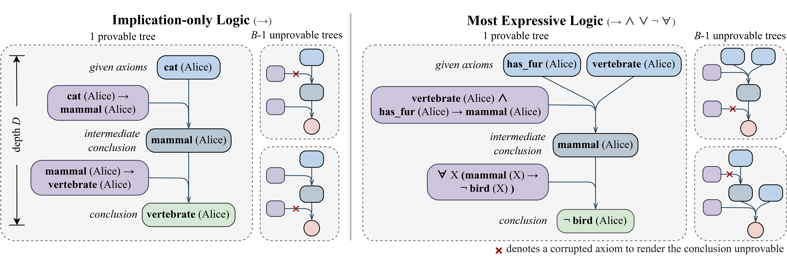
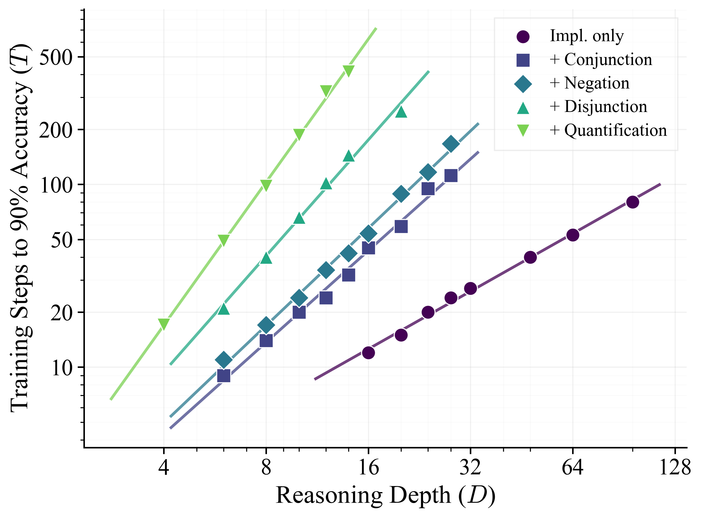
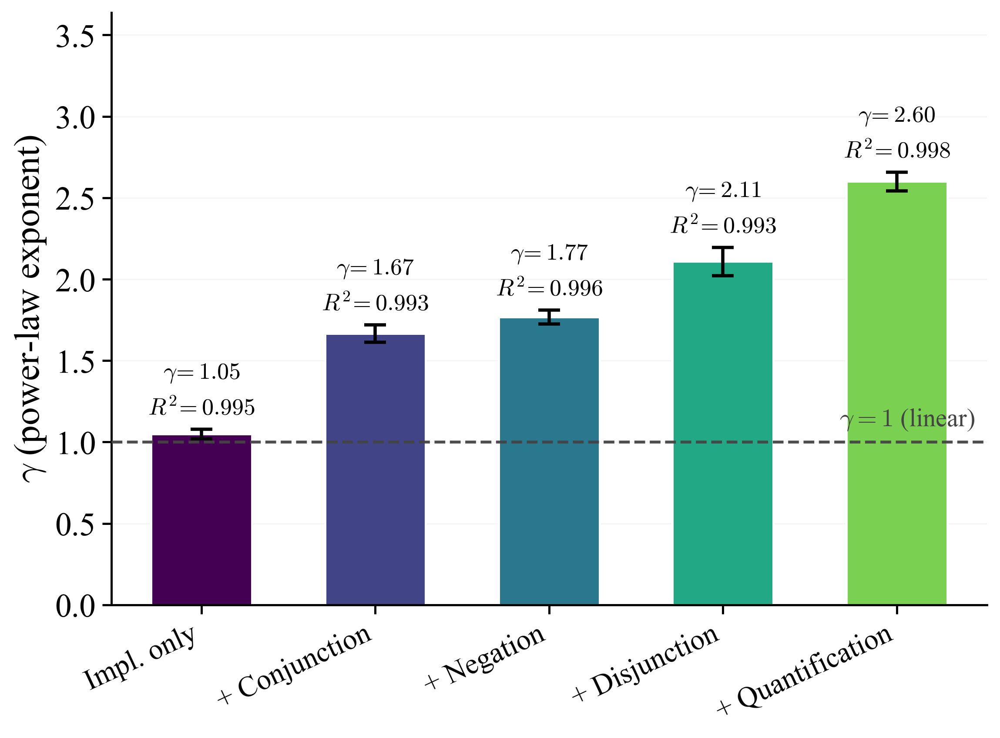
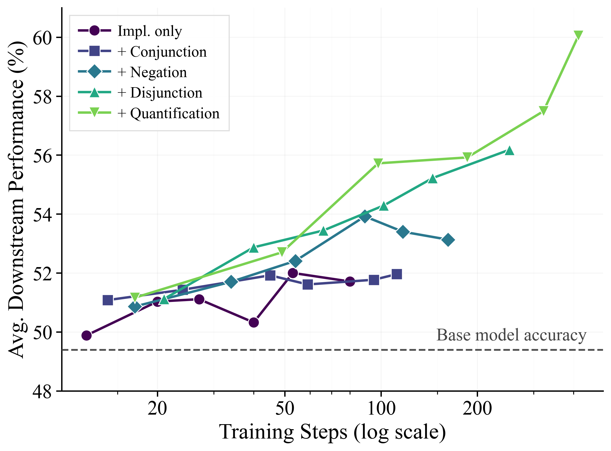
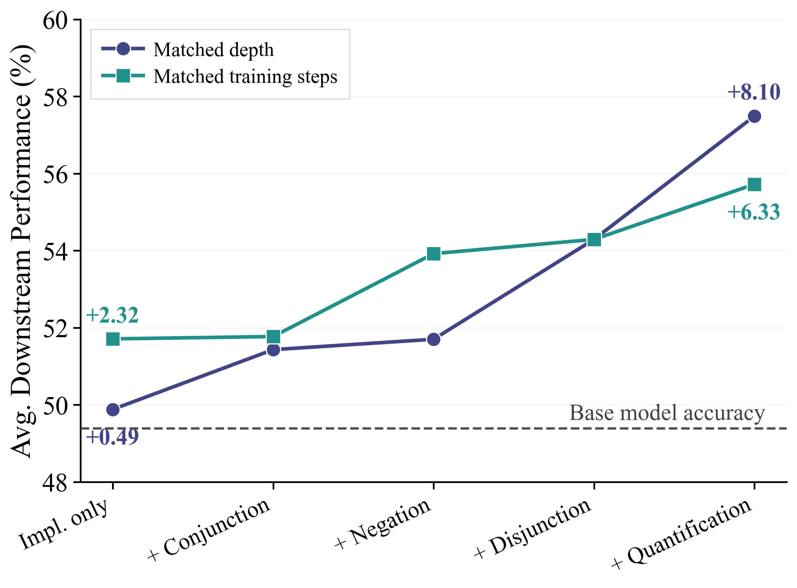
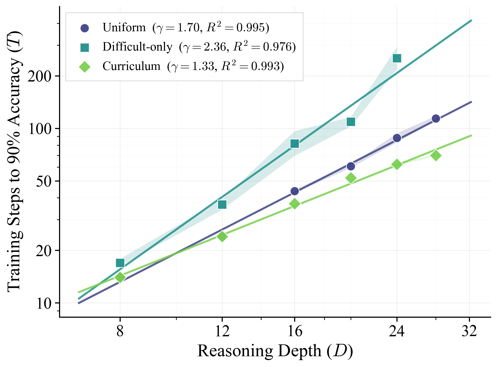
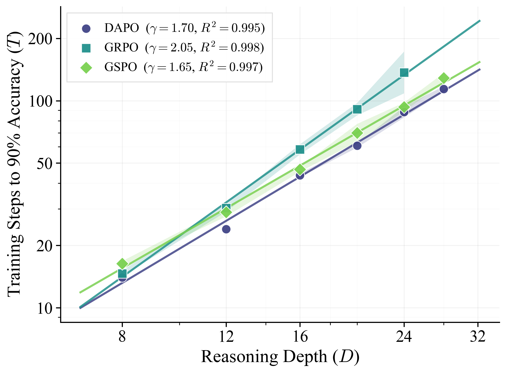
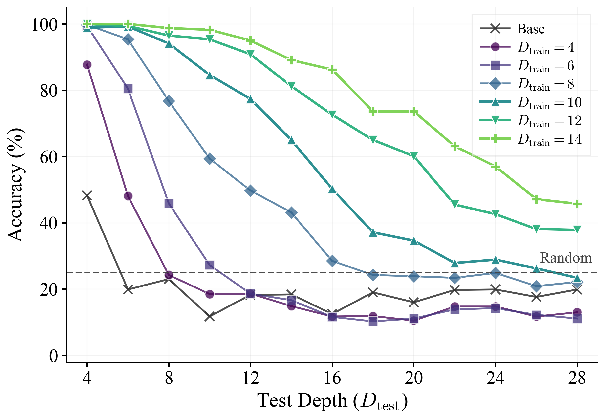
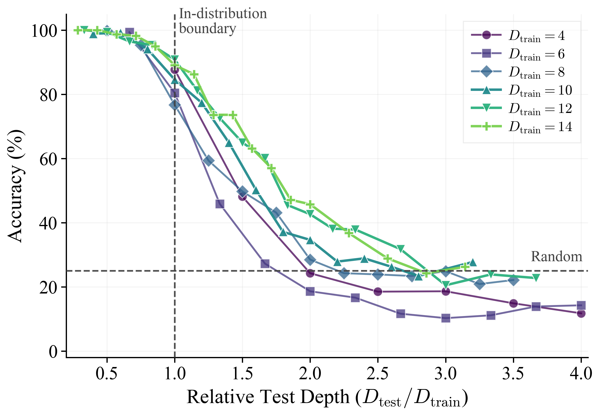
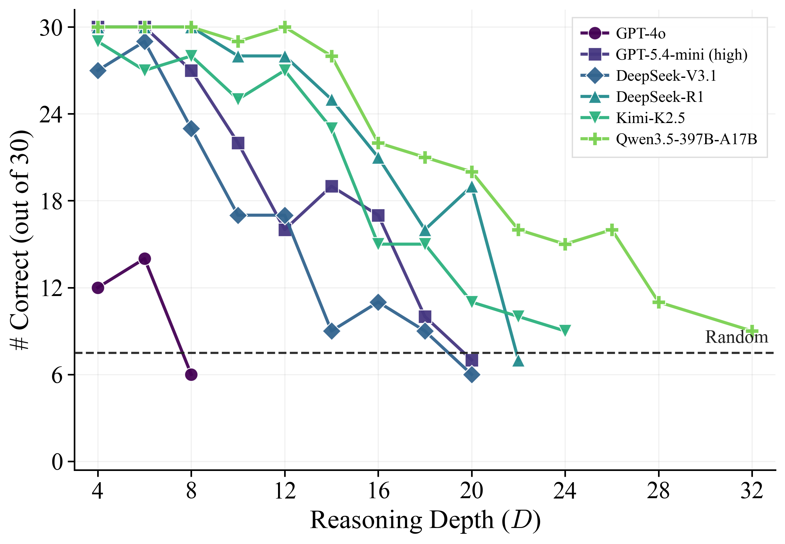

Preprint · 2026
How Deep Can LLMs
Learn to Reason?
Expressiveness Is Key
1Purdue University2UNC Chapel Hill3Georgia Tech4UC San Diego
What a model learns from matters.
Controlling logical expressiveness reveals how RL scales and how reasoning transfers.

Abstract
How deep can reinforcement learning teach a language model to reason? ScaleLogic is a synthetic logical reasoning framework with independent control over proof depth and the expressiveness of the underlying formal system, from simple “if–then” chains to reasoning with conjunction, negation, disjunction, and universal quantification.
In the studied regime, the RL training steps needed to reach a target accuracy follow a power law in reasoning depth. More expressive logic produces steeper scaling, but also stronger transfer to mathematics and general reasoning benchmarks. The most expressive setting improves mean downstream Avg@8 by 10.66 percentage points. The scaling pattern persists across multiple RL algorithms, model sizes, and the additional model family tested, while curriculum training improves efficiency. These results suggest that better training methods and data can extend the reasoning horizon.
A controlled environment for reasoning
ScaleLogic builds proof trees backward from candidate conclusions. Natural-language templates turn the resulting facts and rules into a multiple-choice problem with an exactly verifiable answer.
Increasing depth lengthens the required proof. Increasing expressiveness expands the set of inference rules available to construct proofs, with each rule associated with a logical operator. This separates two sources of difficulty that are often entangled in natural reasoning tasks.
Follow the proof.
Explore a complete derivation, from given facts to a provable conclusion.
The problem
Derivation
Real examples from the ScaleLogic generator, shown as a single complete proof. Each setting includes the preceding operators. Depth refers to the generated proof tree; playback separates inference operations. Explore the code ↗
More expressive logic. Steeper scaling.
For non-thinking Qwen3-4B trained with DAPO, the training steps T needed to reach 90% held-out Pass@1 follow a power law in proof depth D across all five settings. The fitted exponent rises from 1.05 for implication-only reasoning to 2.60 with quantification.
- T
- Training steps to reach
90% held-out Pass@1 - D
- Proof-tree depth
- γ
- Scaling exponent fitted
for each logic setting
Doubling the depth corresponds to roughly twice the training cost in the simplest setting, versus about six times in the most expressive setting. These are empirical fits over the tested depth ranges, with R2 > 0.99.




Harder to learn. More useful to transfer.
Synthetic logic training improves performance beyond the training domain. Across eight mathematics and general reasoning benchmarks, the most expressive setting lifts mean Avg@8 from 49.39% to 60.05% at 414 RL steps—a gain of 10.66 percentage points.
Simpler settings plateau earlier. More expressive settings also yield larger gains at checkpoints matched to approximately 100 training steps, suggesting that the benefit comes from the structure of the training problems as well as the amount of training.




† Matched depth: D = 12, except implication-only uses D = 16 because smaller depths are near saturation. Matched training steps: the checkpoint closest to 100 steps. Downstream scores report mean Avg@8 across eight benchmarks.
The training recipe matters, too.
Under conjunction, a curriculum that gradually increases depth lowers the scaling exponent to 1.33, compared with 1.70 for uniform sampling and 2.36 for difficult-only training. DAPO, GRPO, and GSPO all exhibit power-law scaling in this setting, with different levels of efficiency.




A longer horizon, with limits.
Training on deeper proofs extends the range of unseen depths that a model can solve. It does not remove the horizon limit: in the quantification setting, models trained at depths 12 and 14 approach chance accuracy around three times their training depth, even with a 32,768-token output budget.




Challenging even for frontier models.
How difficult are these synthetic tasks? In the quantification setting, we evaluate six models on 30 held-out problems per depth, each with four candidate answers. All six evaluated models lose accuracy as reasoning depth increases, including models with explicit reasoning capabilities.
Qwen3.5-397B-A17B falls from 30/30 correct at depth 12 to 9/30 at depth 32. GPT-5.4-mini with high reasoning effort reaches 7/30 at depth 20. The increasing depth exposes a substantial reasoning challenge in this evaluation, even with a maximum response length of 65,536 tokens.

Zero-shot evaluation · + Quantification · 30 problems per depth · Maximum response length: 65,536 tokens. Temperature is 0 where supported; GPT-5.4-mini uses its default temperature with high reasoning effort. Results from Appendix J.
Correctness-guided learning drives transfer.
Does exposure to synthetic proofs suffice? In the quantification setting at depth 8, supervised fine-tuning on gold proofs solves the in-domain task but hurts downstream performance. Format-only and random-reward RL yield no downstream gains. Among these tested alternatives, only correctness-guided RL improves transfer.
| Training method | In-domain (%) | Downstream (%) |
|---|---|---|
| Base model | 34.35 | 49.39 |
| SFT | 97.30 | 24.08 |
| Format-only RL | 37.43 | 49.36 |
| Random-reward RL | 32.17 | 48.06 |
| Correctness-guided RL | 90.30 | 55.72 |
Training budgets are matched by total training sequences (approximately 200k): two SFT epochs or 98 RL steps. Downstream scores are mean Avg@8 across eight benchmarks; in-domain scores are held-out ScaleLogic accuracy.
Citation
@article{wang2026scalelogic,
title = {How Deep Can LLMs Learn to Reason?
Expressiveness Is Key},
author = {Wang, Tianle and Wang, Zhaoyang and Lan, Guangchen
and Wei, Xinpeng and Zhang, Sipeng and Qiu, Guanwen
and Saparov, Abulhair},
journal = {arXiv preprint arXiv:2605.06638},
year = {2026},
url = {https://arxiv.org/abs/2605.06638}
}